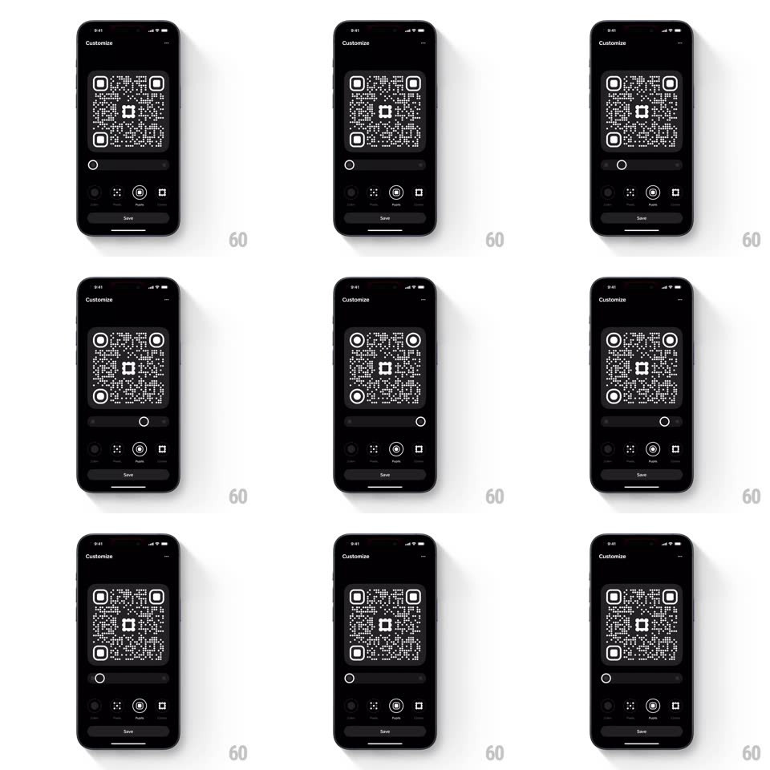

Media
Frame-by-frame

Rebuild this interaction 1:1: Family's QR pupils slider - in the "Customize" screen's Pupils tab, scrubbing the slider smoothly morphs the shape of the QR code's finder-pattern pupils (the inner marks in the three corner squares) between round and square variants in real time.

Rebuild this interaction 1:1: Family's QR pupils slider - in the "Customize" screen's Pupils tab, scrubbing the slider smoothly morphs the shape of the QR code's finder-pattern pupils (the inner marks in the three corner squares) between round and square variants in real time. ## Integration Integration: stack-agnostic spec - springs given as stiffness/damping, timed motions as duration + curve; map every value to your framework and animation library of choice. ## Scene Black "Customize" screen: large QR code preview with three prominent corner finder patterns, a horizontal slider, customization tabs (Pixels / Pupils / Logo / Frame), Save button. ## Motion spec Pattern: real-time slider-driven pupil morph. - Drag: the thumb follows the finger 1:1; the finder-pattern pupils morph continuously per frame - interpolating from filled squares through rounded squircles to circles (direct slider mapping, no tween). - All three pupils morph identically and simultaneously; the outer finder rings stay unchanged so position detection is preserved. - Release: the thumb settles with a tiny spring (spring ~480/30, 150ms); the pupil shape stays where dropped. - The QR preview scales subtly down (0.97) during the drag, springs back on release (spring ~400/24, 250ms). - The Pupils tab icon reflects the current pupil shape (updates on release, 150ms). ## Calibration - Only the pupils change - the data modules and finder rings are untouched. - The morph interpolates shape, not size: pupils stay centered and same-sized throughout. ## Reduced motion No scale-press effect; morph still updates live (functional control). ## Don't miss - All three corner pupils must match at every slider position - independent morphing breaks the QR's symmetry. - The slider is continuous - intermediate squircle shapes are valid states, not just the endpoints.